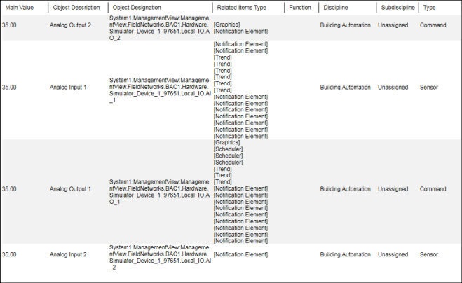
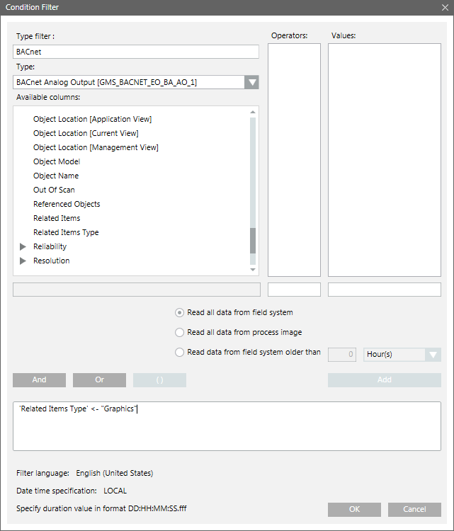
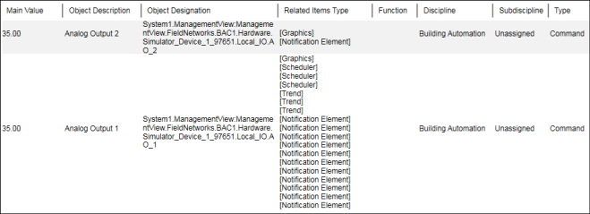

Configuring a Report Using Contains Operator
Scenario: You want to configure a report that displays the data for some objects and you want to view the data for only those objects that are linked to a graphic.
- Ensure that you have configured an Objects report that displays the data of some objects.
- From the Select Columns dialog box select the Related Items Type column.
- The Objects report displays with the Related Items Type column added to it.

- Perform the following steps to add a Condition filter with the an operator:
a. From the Condition Filter dialog box, select Related Items Type in the Available Columns list.
b. Select Contains Operator (←) from the Operators list.
c. In the Values text field, type Graphics.
d. Click Add. - The Condition filter is added to the table and displays in the Filter Expression field below the Add button.

- Click OK.
- Run the report.
- The generated report displays the data for only those objects that have a graphic linked to them.
